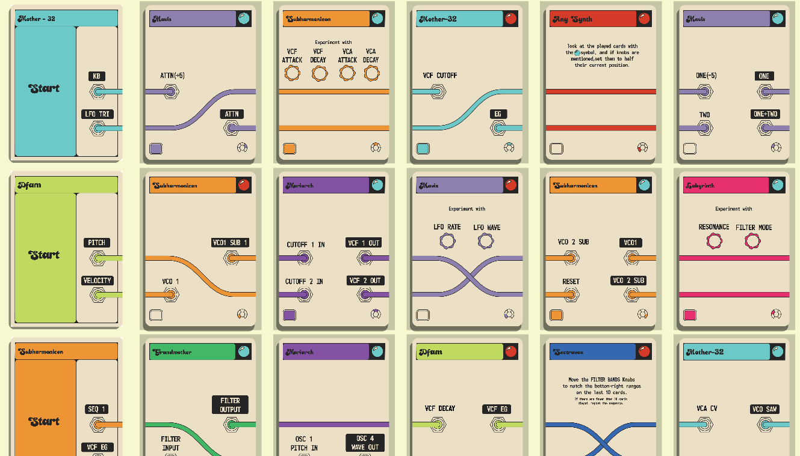
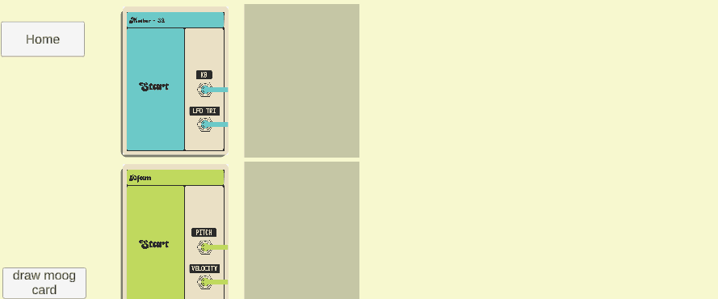

As a side project to my Phonics card game i have also been working on a digitized version of Moog Circuits Connections: a card game built to encourage patching explorations with the family of Moog semi-modular synthesizers, specifically those featured in the Moog sound studio 3 (Mother-32, Drummer From Another Mother, and Subharmnicon). This project was made alongside the Phonics card game and served as testing grounds for the card system. The scope of this project was to recreate the origonal cards as well as creating my own new cards for other semi Moog modular synths (Grandmother, Matriarch, Mavis, Labyrinth, and Sepctravox) in addition to creating cards i also wanted to incorporate some different game mode, although the scope of the game was later changed to limit this to only two game modes.
The art for the original card game and box art was done by artist Philip Linderman, who also did art for the packaging manuals and other components of Moog sound studio accessories. I took inspiration from both the art from his work on other Moog products and is working in general to drive the look and colors used in the project. I used this inspiration to come up with some thumbnails of how the main menu could look. Unfortunately, as I am predominantly a programmer and 3D artist and as such would struggle in creating 2D art for the game, thus I decided that most of the menus would be limited in their art.
The art for the cards started with a scan of the original card I found online. Using these cards as reference I recreated them in adobe illustrator to the best of my abilities, I was able to change which output/inputs and cables would be active/unactive and all that needs to be done is to change the name of the given patch point. Using this file template I was able to create all the cards needed. Recreating the existing card designs was easy, but creating new cards proved more of a challenge than I initially anticipated. Choosing a new color for the cards was easy, for the first few card sets, however towards the end I found I was running up against a wall as I had used most hues, and I was unable to rely on saturation differences to differentiate instrument types as the established style requires the instrument color to be bright. Even in the final game I feel that the matriarch and mavis colors are a bit too similar when separate, although they are different enough to be able to tell between them when placed next to each other.
Choosing which inputs/outputs to have on each card was difficult to choose, i constantly had to ask myself “what would make a patch more interesting?” and “what are the key features of this synth that i want to highlight?”. A challenge made more difficult by my owning only 3 of the 8 instruments that are featured in the app.
Ive also found some what of a flaw in the concept of the base game (or perhaps I'm just not as familiar with modular synthesizers as I think I am). There are 3 types of signals that the synths process:
- Control voltages (CV): a voltage that modulates a destination as the input signal fluctuates, this is the most versatile and has the most notable affect on the final sound. CV is like using the signal of an input source to automatically turn a knob on the panel.
- Audio sources, this is a high frequency signal that is within human hearing, this is the sound that players will hear.
- Triggers: when a input signal crosses a threshold an “event” occurs. E.G an envelope being triggered by a key press
Ideally a CV output will go into a CV input and so on. Some times mixing signals can provide interesting effects, such as an audio source modulating an oscillator CV input creates frequency modulation (FM) synthesis. but inputting a trigger or CV into an audio input means the output wont produce an audible output. This problem is resolved by having the different game modes, specifically the multi card start game mode allows for players to choose to place a card to where in the patch they believe it to be most useful.

I wanted the game to be accessible to anyone with a Moog modular synth, as such the project needed to allow users to choose what cards were used in game. This provides the benefit of allowing people who only own one of these synths to play. The Instrument select system works off a series of Booleans that define the selection of a synth, and an array for each of the instruments that holds the cards for that instrument. On the start of the game the deck manager adds the cards for the selected instruments to a list called deck (the order of this deck is also randomized at this point). Then when a card is drawn a card is instantiated, using the card data from the index 0 point of the list, then this card data is removed from the list. Adding a card back into the deck works in much the same way, only data is added to the deck list before destroying the card object.
The following code handles the adding of cards to the players deck.
public InstramentSelect myISelect;
public List fullDeck;
#region card lists
public List genericCards;
public List m32Cards;
public List dfamCards;
public List subHCards;
public List LabCards;
public List sVoxCards;
public List mavisCards;
public List grandMCards;
public List matriarchCards;
#endregion
//the CheckAddableCards function is called on start, using bools from the myISelect object
public void CheckAddableCards()
{
if(myISelect != null)
{
//checks the selected instraments and adds the relevent cards to the deck.
if(myISelect.GenericSelected)AddCardsToDeck(genericCards);
if(myISelect.M32Selected)AddCardsToDeck(m32Cards);
if(myISelect.DFAMSelected)AddCardsToDeck(dfamCards);
if(myISelect.SubHSelected)AddCardsToDeck(subHCards);
if(myISelect.LabSelected)AddCardsToDeck(LabCards);
if(myISelect.SVoxSelected)AddCardsToDeck(sVoxCards);
if(myISelect.MavisSelected)AddCardsToDeck(mavisCards);
if(myISelect.GrandMSelected)AddCardsToDeck(grandMCards);
if(myISelect.MatricarchSelected)AddCardsToDeck(matriarchCards);
}
}
//add card(s) to the main deck list
public void AddCardsToDeck(List CardsToAdd)
{
//adds relevent cards to deck
fullDeck.AddRange(CardsToAdd);
}
The game play for this experience is very simple, as players just draw cards and place them on card slots, with the intention that players will recreate the new patch connetion on their physical synthesizers. This experience is more of a suggestion/ new way to explore hardware than a game, players are even recommended to ignore suggested patches and follow what sounds nice to them.

Powered by w3.css